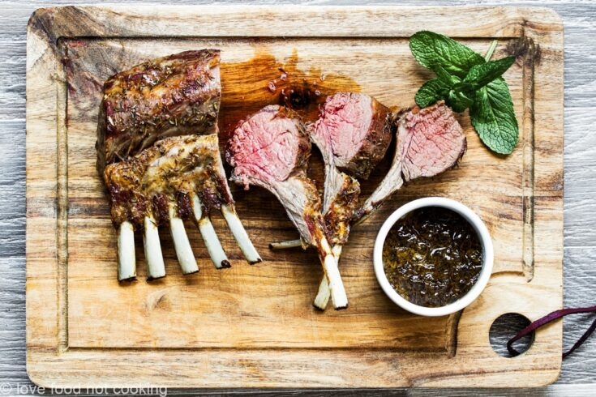

Air Fryer Lamb

Air fryer lamb with soy honey glaze
Ingredients
Oyster Sauce 1 tablespoon
[Optional] 5 spice powder
Steps
- Cut lamb into pieces (one bone each or two bones each)
- Marinate lamb in salt and cooking wine for 20 mins
- Boil lamb in water for 3-5 mins
- Pat dry lamb
- Wrap foil around bone of lamb
- Add cumin powder and black pepper on the lamb
- Air fry for 14 mins at 370deg
- Mince Garlic
- Mix soy sauce, oyster sauce, honey, and black vinegar
- Change proportion of sauce to get desire consistency
- Remove lamb from air fryer and apply sauce
- Sprinkle Garlic over lamb
- Add cumin seeds
- Air fry for 5 mins at 400deg